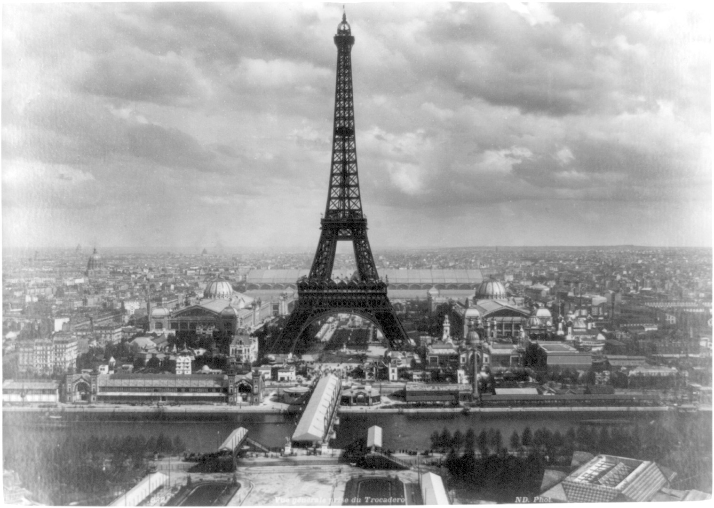
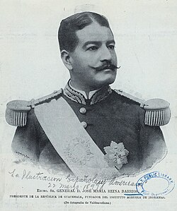

Cronología de la Exposición Centroamericana
1889
Inspiración tras la Exposición Universal de París.

Torre Eiffel en la Exposición Universal de París, 1889.
8 de marzo de 1894
Aprobación del Decreto 253 por la Asamblea Nacional Legislativa.

Postal conmemorativa del Correo de Guatemala, administración Reyna Barrios.
1896
Construcción del Hotel Exposición y preparación del recinto ferial.

Hotel Exposición, construido para recibir a los visitantes de la feria, 1896.
15 de marzo de 1897
Inauguración oficial por el Presidente José María Reina Barrios.

El General José María Reina Barrios, Presidente de Guatemala e impulsor de la Exposición.
15 de agosto de 1897
Cierre de la Exposición Centroamericana.

Vista del recinto ferial durante la Exposición Centroamericana, 1897.
8 de febrero de 1898
Asesinato del Presidente Reina Barrios en la Ciudad de Guatemala.
El General José María Reina Barrios, asesinado el 8 de febrero de 1898 en la Ciudad de Guatemala.